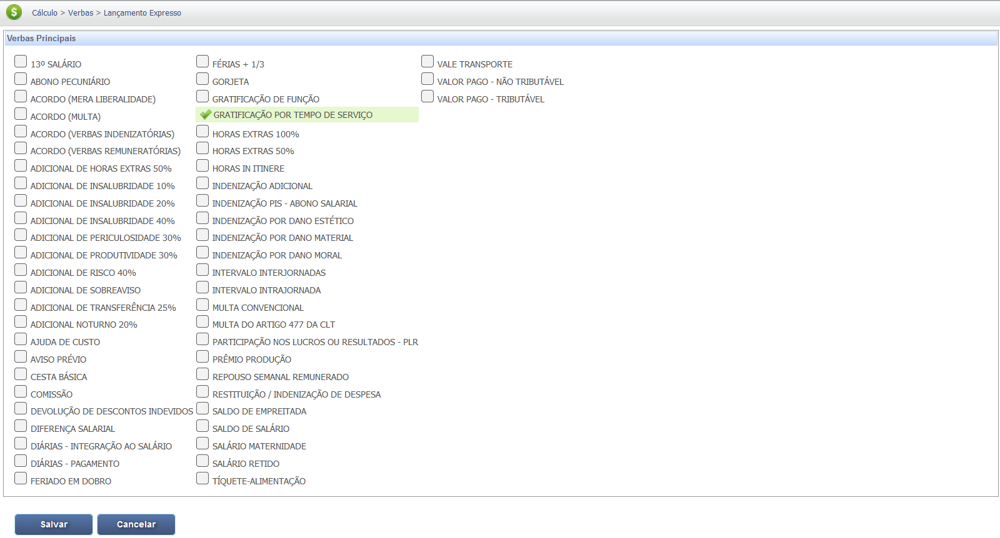
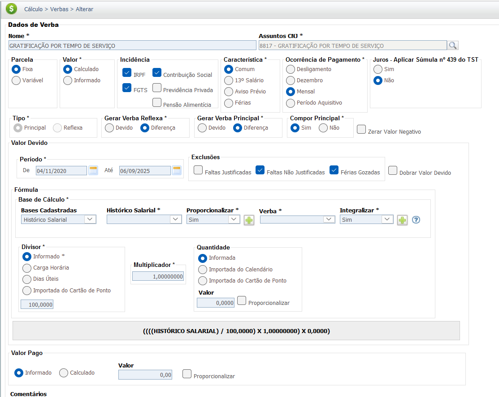
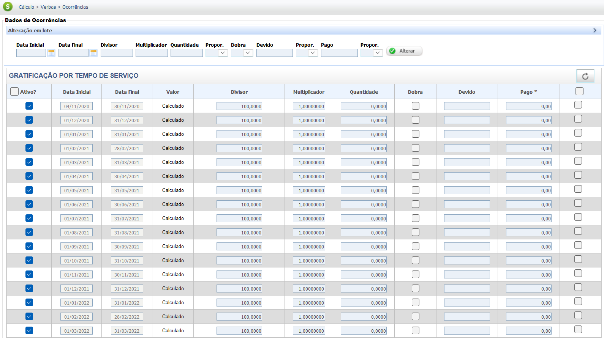

Gratificação por Tempo de Serviço
A Gratificação por Tempo de Serviço (GTS), também conhecida como "anuênio" ou "biênio", é um adicional salarial concedido ao empregado em razão do tempo de serviço dedicado à empresa. Ela é uma forma de premiar a lealdade e a permanência do trabalhador no quadro funcional.
A GTS não possui previsão na Consolidação das Leis do Trabalho (CLT), sendo um direito criado e regulamentado, na maioria das vezes, por meio de Convenções Coletivas de Trabalho (CCT), Acordos Coletivos (ACT) ou por Regulamento Interno da Empresa.
Por ser uma parcela paga habitualmente e em decorrência do contrato de trabalho, a gratificação por tempo de serviço possui Natureza Salarial e, portanto, integra a remuneração para todos os efeitos legais, gerando reflexos sobre as demais verbas.
Base Legal e Jurisprudência
A natureza salarial da Gratificação por Tempo de Serviço (GTS) é o fundamento para a integração na remuneração, conforme a legislação e jurisprudência a seguir:
Fontes Normativas
Consolidação das Leis do Trabalho (CLT):
-
Art. 457, § 1º:
"Integram o salário a importância fixa estipulada, as gratificações legais e as comissões pagas pelo empregador."
-
Art. 468:
"Nos contratos individuais de trabalho só é lícita a alteração das respectivas condições por mútuo consentimento, e ainda assim desde que não resultem, direta ou indiretamente, prejuízos ao empregado, sob pena de nulidade da cláusula. (Princípio da inalterabilidade contratual lesiva)"
Jurisprudência
Súmula nº 203 do TST (Incorporação):
Tese Consolidada:
"A gratificação por tempo de serviço integra o salário para todos os efeitos legais."
Base de Cálculo e Deduções
IMPORTANTE: A Gratificação por Tempo de Serviço (GTS) deve integrar o valor da Remuneração Total (Salário-Base + Adicionais + H. Extras + Gratificações ) para fins de cálculo das deduções obrigatórias fiscais e para formação da base de cálculo das Verbas Reflexas.
Definição e Critérios da Base de Cálculo
O cálculo da Gratificação por Tempo de Serviço (GTS) varia conforme a norma coletiva (CCT/ACT) ou o regulamento interno da empresa. Geralmente, ela é paga como um percentual (Ex: 1%, 2%, 5%) sobre o salário-base do empregado por cada período de tempo de serviço (Ex: anuênio, biênio, triênio).
Base de Cálculo da GTS sendo o Salário-Base:
- Base Principal: Salário Base.
- Fórmula de Cálculo: Salário Base * % Gratificação.
Observação: Em algumas negociações coletivas (CCTs), a base de cálculo pode ser uma "remuneração-base" que inclui outras parcelas fixas. Consulte a norma aplicável ao seu caso.
Exemplo Prático (Valor Bruto)
Cálculo da Gratificação por Tempo de Serviço (GTS) considerando um Salário-Base de R$ 3.000,00 e 5 anos de serviço (5 anuênios) com percentual de 1% por ano:
| Item | Valor / Detalhe |
|---|---|
| Salário-Base (Base de Cálculo) | R$ 3.000,00 |
| Percentual por Ano (Anuênio) | 1% |
| Tempo de Serviço (Anuênios) | 5 anos |
| Percentual Total (5 x 1%) | 5% (0,05) |
| Cálculo | R$ 3.000,00 * 0,05 |
| Valor Bruto da GTS | R$ 150,00 |
Deduções da Base de Cálculo
Deduções Fiscais e Previdenciárias:
Por possuir natureza salarial, a Gratificação por Tempo de Serviço integra a base de cálculo para as deduções legais, como a contribuição para o INSS e o Imposto de Renda (IRPF). O cálculo incide sobre a remuneração total (salário base + GTS + outras verbas salariais).
Deduções de Valores Pagos (Compensação - Adiantamento):
- Adiantamentos Salariais: Valores antecipados ao empregado no mês da rescisão ou em meses anteriores.
Exemplo Prático (Valor Bruto - Deduções = Valor Líquido)
Abaixo, a simulação da aplicação das deduções fiscais e previdenciárias sobre a remuneração total, considerando Salário-Base de R$ 3.000,00 e GTS de R$ 150,00 (Remuneração Total de R$ 3.150,00), sem considerar as deduções de valores já pagos:
| Item | Valor |
|---|---|
| Remuneração Total (Base de Cálculo) | R$ 3.150,00 |
| (-) Dedução INSS (Simulado) | R$ 250,00 |
| (-) Dedução IRPF (Simulado) | R$ 100,00 |
| Total Deduções (Fiscais/Previdenciárias) | R$ 350,00 |
| Remuneração Líquida (Parcial) | R$ 2.800,00 |
As alíquotas e as faixas de dedução do INSS e do IRPF mudam periodicamente. O exemplo acima é apenas uma simulação.
Verbas Reflexas
A Gratificação por Tempo de Serviço (GTS) possui natureza salarial (Art. 457, § 1º, da CLT) e, por isso, seu valor deve ser adicionado ao salário base para apurar todas as verbas que têm a remuneração como base de cálculo.
A integração da GTS garante que o cálculo de verbas rescisórias e contratuais reflita a real base remuneratória do empregado. Confira abaixo as principais verbas que recebem o reflexo da GTS:
| Verba Trabalhista | Reflexo da GTS |
|---|---|
| 13º Salário | A GTS integra o cálculo do 13º Salário (integral e proporcional). |
| Férias + 1/3 | A GTS integra o cálculo das Férias (vencidas e proporcionais) e o adicional de 1/3. |
| Aviso Prévio | O valor da GTS integra a base de remuneração para cálculo do Aviso Prévio (trabalhado ou indenizado). |
| FGTS (Depósito Mensal e Multa) | A GTS integra a base de cálculo para o depósito mensal de 8% do FGTS e também para o cálculo da Multa de 40% (ou 20%). |
Atenção: A natureza salarial da Gratificação por Tempo de Serviço (GTS), conforme a Súmula 203 do TST, garante a integração do seu valor na base de cálculo de todas as verbas salariais e rescisórias.
Calculadora (Simulação)
Utilize esta ferramenta para calcular o valor bruto mensal da Gratificação por Tempo de Serviço (GTS) com base no seu salário-base, percentual do anuênio/biênio e tempo de serviço acumulado.
Cálculo Simples (Valor Bruto da GTS)
GTS = Salário-Base * (Percentual por Período * Número de Períodos)
Lançamento no PJe-Calc
A seguir, confira o passo a passo para o lançamento da verba no PJe-Calc, utilizando a opção "Expresso":
-
Acessar Verbas e Escolher Lançamento: No menu de
navegação à esquerda, clique na opção Verbas para iniciar o lançamento. Após o
comando,
será exibida a tela para escolha do Lançamento da Verba. Escolha a opção Expresso.

- Seleção da Verba: O sistema abrirá as opções de verbas, escolha a verba Gratificação por Tempo de Serviço e clique no botão Salvar 
-
Quadro de Verbas e Ações: O sistema exibirá um quadro
com os campos:
- Ações - contendo as opções de configurações da verba selecionada (parâmetros,
ocorrências e
exclusão)

-
- Parâmetros da Verba

-
- Ocorrências da Verba

-
- Excluir

- Verba Principal - verba selecionada para lançamento.
- Verba Reflexa - em que ao clicar no botão Exibir serão listadas todas as verbas reflexas ligadas a Verba Principal.
- Parametrização da Verba: Ao clicar no botão Parâmetros da Verba serão exibidas todas as configurações necessárias para a parametrização da Verba Principal. 
- Registro de Ocorrências: Ao clicar no botão Ocorrências da Verba serão exibidas todas as configurações necessárias para registro das ocorrências da Verba Principal. 